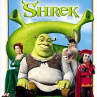
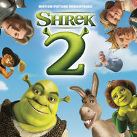
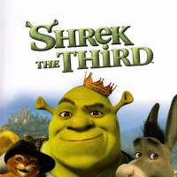

Using my platform to discuss issues that I care about deeply
get in touch|  |
ShrekA mean lord exiles fairytale creatures to the swamp of a grumpy ogre, who must go on a quest and rescue a princess for the lord in order to get his land back. |
|  |
Shrek 2Princess Fiona's parents invite her and Shrek to dinner to celebrate her marriage. If only they knew the newlyweds were both ogres. |
|  |
Shrek The ThirdWhen his new father-in-law, King Harold falls ill, Shrek is looked at as the heir to the land of Far, Far Away. Not one to give up his beloved swamp, Shrek recruits his friends Donkey and Puss in Boots to install the rebellious Artie as the new king. |
While it appears this page is about a person named Reb G -- it's actually a tribute page to the Shrek franchise. If you haven't seen, do yourself a favor and watch it now